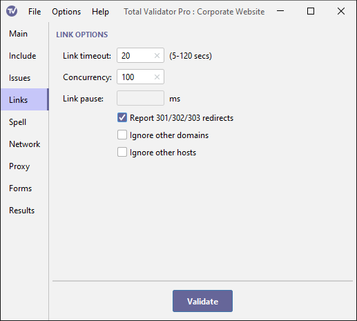

Documentation > Link options
These options control how links are tested. If you are testing more than one page, then even if you do not select the Broken link check, these options will still apply, because the application still needs to check links to those pages it is trying to test.

Link timeout
When testing a link, then if a page doesn't respond within 20 seconds it is recorded as broken. If you link to pages on particularly slow servers, you can use this option to increase the time Total Validator waits before recording it as a broken link.
You can also reduce the time down to 5 seconds for faster sites. This will speed the testing process if you do have broken links, but with the possibility that some slow links will be reported as broken.
The value that entered here must be an integer (whole number) from 5 to 120 representing the number of seconds to wait. If you leave it blank it will default to 20 seconds.
Concurrency
This option allows you to set how many simultaneous links checks will be performed. Some web servers and routers cannot handle high numbers of concurrent requests, so you may need to use this option to reduce this value.
If you have a modern router and are testing a fast website increasing this value will generally make the testing faster, but with the possibility that your router or the web server may throttle connections causing false positives. Leave blank or set to 0 to remove all limits for the fastest results.
Link pause
To minimise the impact on the web server set the
Concurrency to 1 and then set this option to the time in milliseconds to
pause between testing each link. The rate of requests hitting the server
will then be reduced to a minimum.
If you are testing more than one page you can also use the Page pause option to set a delay between retrieving pages for testing.
Report redirects
When testing for broken links select this option to report warnings for links that redirect to a different URL.
These are reported as warnings as they are not strictly errors. But because a redirected link can later become obsolete and therefore broken it may be wise to replace any such links with the ones being redirected to.
Three types of redirects are reported: Permanently Moved (301),
Temporarily Moved (302), and See Other (303).
Ignore other domains
Select this option to ignore all links to resources that don't have the same domain name as the Start page.
This will reduce link errors if you do not have access to the Internet, or remote sites are blocking link checking but you still wish to test links to resources in the same domain as the Start page.
Note that for comparison purposes, all resources, including the Start page, that use an IP address or the file: protocol will be treated as if their domain name is blank, i.e. "".
The Ignore other hosts option is more restrictive, and both cannot be set at the same time.
Ignore other hosts
This option will ignore all links to resources that don't have the same host name as the Start page.
This will reduce link errors if you do not have access to the Internet, or remote sites are blocking link checking but you still wish to test for broken links to resources on the same website as the Start page.
Note that for comparison purposes, all resources, including the Start page, that use an IP address or file: will be treated as if their host name is blank, i.e. "".
This option is more restrictive than the Ignore other domains option, and both cannot be set at the same time.